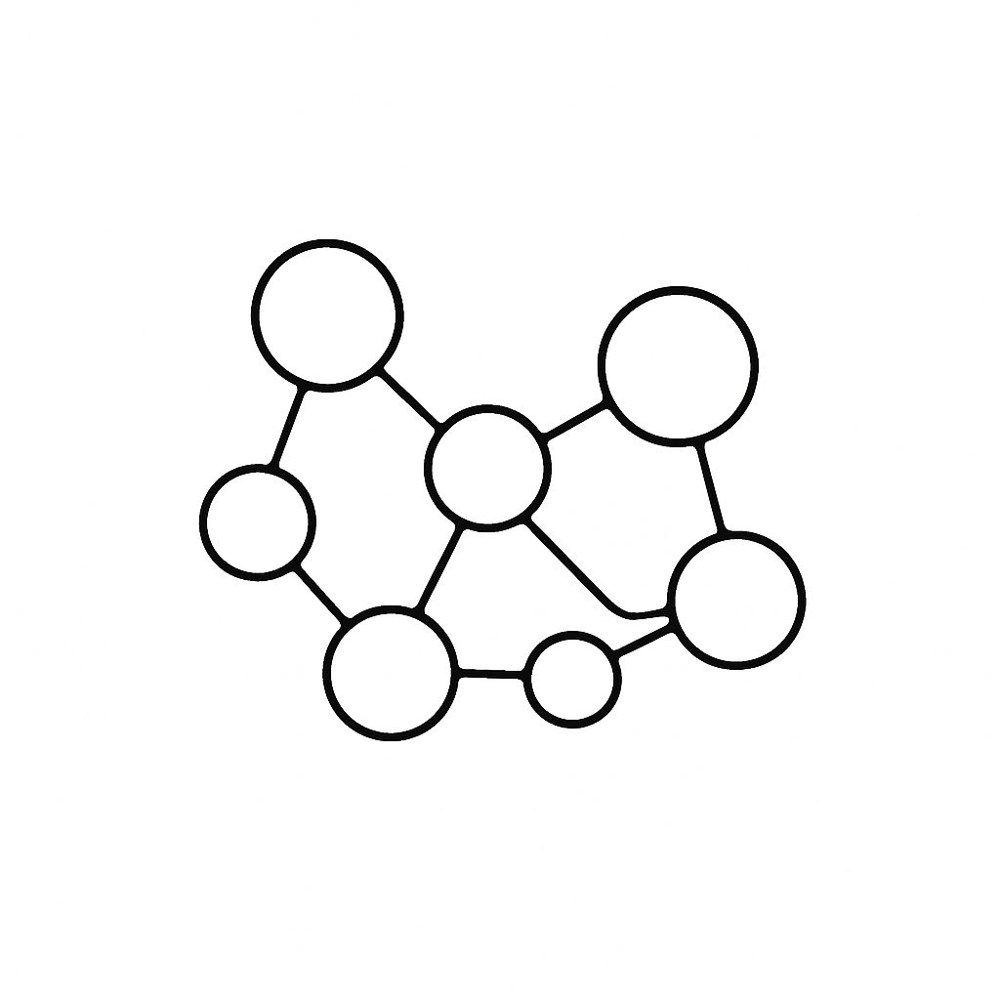
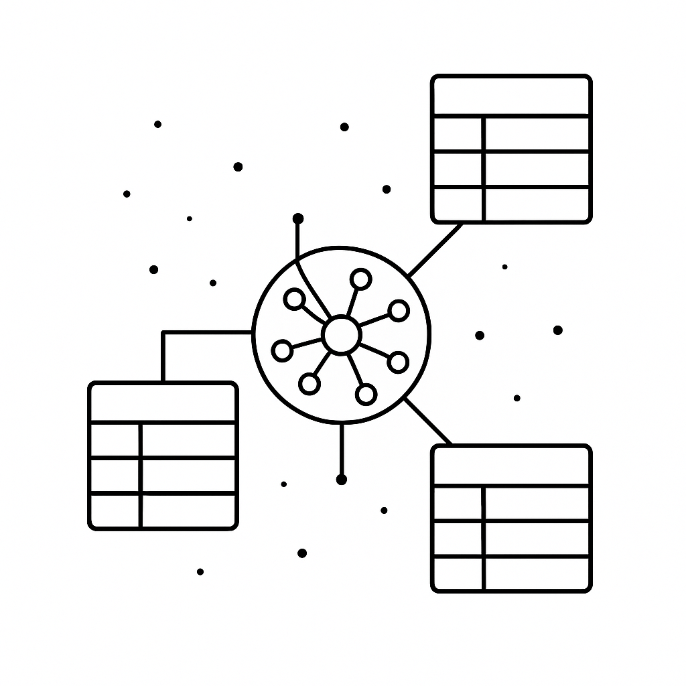

1〜30人規模の事業者向け、Notion × AI の一貫設計。
LINEで診断シートをお届け（無料・30秒で受取）
無理な営業は一切しません
どれか1つでも当てはまれば、お役に立てます

1〜30人規模の事業者
中小企業 / 個人事業主 / スタートアップ — 専任IT担当がいなくてもOK
雑務に時間を奪われている
転記 / 要約 / ファイル整理 / 定型メール対応で本業の時間が削られている

Notion + AI を使いこなしたい
可能性は感じている。けれど自社では設計しきれず断片活用で止まっている
1〜30人規模の事業者が AI を使いこなせず時間を失う、典型パターンです
転記・コピペ
フォーム→スプレッドシート→Notion の転記ループ。AI で自動化できるのに人手で消化している。
情報の散逸
Slack / スプレッドシート / メモ / LINE。AI に投げたくても、参照すべきデータが点在している。
単発利用で止まる
毎回プロンプト書き直し&手コピペ。エージェントの自律実行まで自社では設計しきれない。
運用に乗らない
ベンダーに頼んだ仕組みが現場で回らず、結局元のやり方へ。改修の度に費用が積み上がる。
問題は AI の性能ではなく、「設計」です。
蓄積（Notion）→ AIが読む → エージェントが動く → 書き戻す。この一連を一気通貫で組んで、初めて雑務時間は半減します。
— Notion × AI 業務改善コンサル 代表
Architecture
Notion(蓄積) → AI読込 → エージェント実行 → Notion書き戻し。
この自己進化ループを分業せず一気通貫で設計できる、これが最適解です。
SELF-EVOLVING LOOP — RUNNING 24 / 7
構造化されたDBに業務データ・履歴・ナレッジが蓄積される。
要約・分類・優先順位付けを AI に任せ、人は確認だけ。
下書き作成・メール返信・通知振り分けを業務単位で自律実行。
実行結果が再び蓄積。使うほど賢くなる仕組み（チーフAIが継続最適化）。
30分・無料 / 無理な営業は一切しません
Use Cases
「雑務 → Notion + AI で仕組み化した結果」のサマリ。
BEFORE月初の請求業務に毎月3時間
AFTERNotion + AI 自動整理 → 30分
BEFORE媒体ごとに集計＋面談前要約を手作業
AFTERNotion DB + AI で自動化 → 面談に集中
BEFORE企画→台本→編集が分断、毎回ゼロから
AFTERNotion + AI で台本自動生成 → 本数2-3倍
他にも 建設業 / ジュエリー店 / 美容サロン / 営業会社 など多業種で実績があります
Pricing
Care（月額・保守） と Build（新規構築） の2系統。組み合わせて利用可能です。
迷ったらこちら
初めての方は Build Standard で構築 → 納品後 Care Standard に移行が一番選ばれている流れです。
BUILD STANDARD
期間 1〜2ヶ月
LAYER 1 + 2
Notion + AI 自動化。雑務の自動化までを一括構築。迷ったらこちら。
BUILD LIGHT
LAYER 1¥150,000 〜 ¥300,0002〜4週間
Notion 設計のみ。まず基盤を整えたい方向け。
BUILD PREMIUM
LAYER 1〜3（4可）¥600,000 〜 ¥1,500,0002〜3ヶ月
エージェントの自律実行までを一気通貫で。
CARE STANDARD
月8時間目安 / 5〜15人規模
納品後の継続改善・追加実装まで含む。AIが賢くなるまで伴走します。
CARE LIGHT
月3h目安¥30,000/月〜5人規模
軽微な改修・運用QA・月次レビュー
CARE PREMIUM
月15h目安¥150,000/月15〜30人規模
複数エージェント運用 + 隔週MTG
※ 超過時間は ¥15,000/h で別途請求 / Care は半年継続で 5% 割引
無理な営業は一切しません
Don't Hire. Automate.
新たに人を雇うのではなく、AI による自動化を導入する。
正社員パート1人を雇うコストで、AI は24時間動き、使うほど賢くなります。
SAVED / MONTH
¥84,000
削減できる月の人件費
月30時間削減 × 時給¥2,800換算（社保込み正社員平均）
PAYBACK
約5ヶ月
で初期投資を回収
Build Standard ¥450,000（中央値）÷ 月¥84,000 ≒ 5.4ヶ月
COMPARE
パート社員1人を雇う
継続的な人件費
Build Standard
AI 自動化を構築
発生形態
月¥220,000
継続発生（×12 = 年¥2,640,000）
¥450,000
一括・恒久
稼働時間
月160h
24h × 365日
立ち上がり
教育に1〜3ヶ月
即日稼働
蓄積効果
退職時に消失
使うほど賢くなる
パート社員1人を 約2ヶ月 雇うコストで、Build Standard が完成します
※ 数字は中小企業の平均的な業務量・人件費を基にした試算です。実際の効果は業務内容により変動します。
Flow
無料相談から納品・継続改善まで、プロセスはシンプルに。
業務の概要をヒアリング。Notion + AI の活用余地と、おおよその削減見込みをお伝えします。
業務フローを棚卸しし、どの雑務をどの層（Notion / 自動化 / エージェント）で削るかを具体提案。実装前に削減見込み時間を試算し、費用と期間を確定します。
Layer 1 から順に構築。途中段階でも触れる状態で共有し、フィードバックを反映します。
マニュアル動画と運用ガイドを納品。希望者は Care プランに移行し、継続改善で AI を賢くしていきます。
FAQ
問題ありません。プラン契約から立ち上げまでお手伝いします。むしろ、最初から AI 連携を見据えた構造で組めるので有利です。
分業すると Notion 側の構造と AI 側の前提がズレ、運用で破綻するケースが多いです。4層を一気通貫で設計できるのが弊社の強みです。
構築が必要なら Build Standard（Notion + AI 自動化）、すでに Notion がある場合は Care Standard から始めるケースが多いです。無料相談で適切なプランをお伝えします。
Notion / 自動化レイヤーは現場の方が改修できる構造で納品します。エージェント / メタ層の改修は Care プランでの伴走を推奨します。
1〜30人規模で、雑務をデータと AI で削れる業務であれば業種は問いません。実績は税理士・人材・クリエイター・コンサル・整体院・EC・コーチ・不動産など多岐にわたります。
Get Started
まずは30分の無料相談から。お話を伺った上で、Notion × AI で削れる雑務とおおよその削減見込みをお伝えします。
LINEで診断シートをお届け（無料・30秒で受取）
無理な営業は一切しません